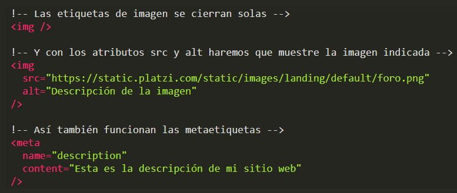

Etiqueta de apertura:
– Un signo de menor-que (<).
– El nombre de la etiqueta (por ejemplo, a) completamente en minúsculas.
– Un signo de mayor-que (>).
• Contenido de la etiqueta (por ejemplo, un texto como “Viva Platzi”).
Otro signo de menor que y una barra inclinada (/).
– El nombre de la etiqueta (de nuevo, a).
– Un último signo de mayor-que (>).

Aunque también hay elementos que no necesitan etiqueta de cierre porque la misma etiqueta de apertura puede cerrarse a sí misma. También existen dos tipos de etiquetas “invisibles”: etiquetas contenedoras (como header, footer, div y main) y metaetiquetas (por ejemplo, las etiquetasmeta description o meta viewport).
Con las metaetiquetas permitimos que diferentes robots (como Google) entiendan cómo es nuestro sitio, qué información contiene y puedan trabajar sobre él. Y gracias a las etiquetas contenedoras podemos organizar otras etiquetas y, más adelante, preparar nuestra página para tener los mejores diseños.